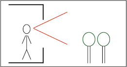
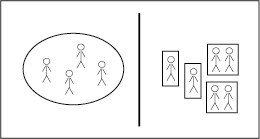
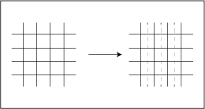
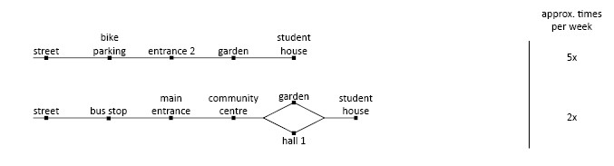
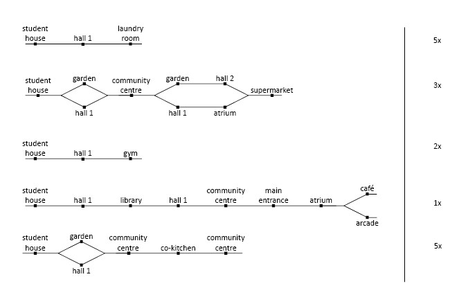
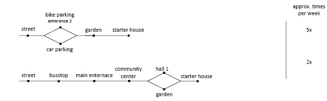
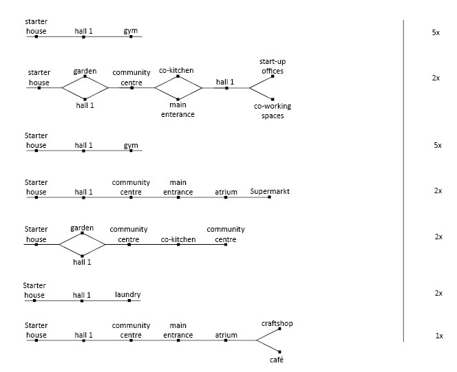
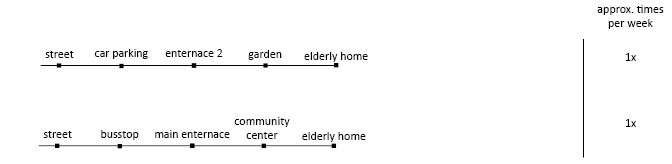
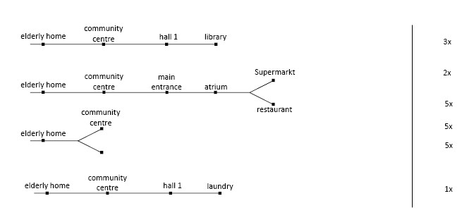
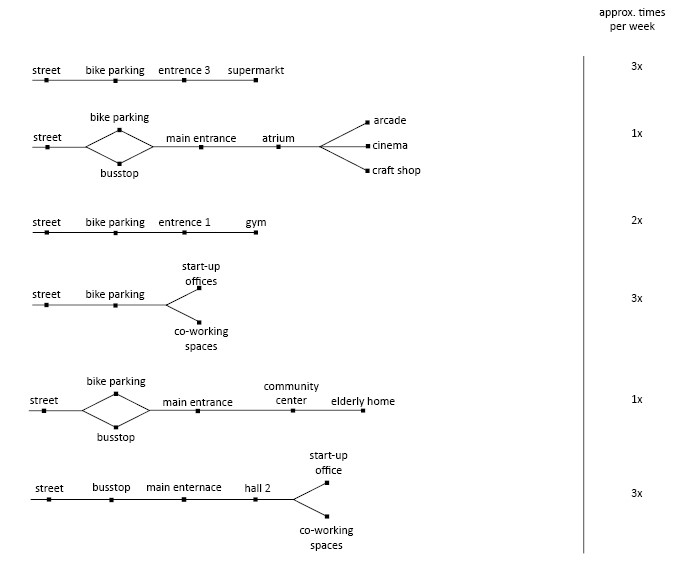

Planning: process
Here you should include the process and product of your 1st activity: Planning
| Title | Planning (process): Programme of Requirements & Network (product) |
|---|---|
| Objective | Formulate the design problems, form a programme of requirements, form a network, formulate your design principles and the idea (spatial sequences/experience/stories visible in a network). |
| Procedure | Describe the hierarchy of design decisions, formulate design goals, define design principles, identify stages in the design process that could be supported by algorithms, draw a flowchart to reflect on these steps and their connections and update it every week. Develop a programme of requirements, an idea (encapsulating the added value of the building and what is going to be unique about it in terms of human experiences) and a corresponding network indicating the main trips inside the building to be facilitated by direct connections matching with the scenarios envisaged in the idea. Formulate the design principles indicating what is a good shape for the building given operational, climatic, or structural aspects. |
PVE IMAGES/SKETCHES + ANALYSE?
Ideas for improvement on the site:
- Using the existing surrounding structures and creating a new function/environment. (train)
- Next to the site there is an unused train track. The train track is currently used by restaurants and cafés. The train track provides a unique and creative location and is attractive to business owners and new developers. Especially since it's close to the city centre, the location provides a lot of potential.
- Integrating surrounding wall paintings on the site
- The area around the site has a lot of different wall paintings. This is something characteristic of Rotterdam, and especially Rotterdam-north. An improvement on the side would be integrating these artistic pieces on the building site and the surrounding area.
- Keeping current existing businesses onto the site and in the building
- Currently the building is used by various: restaurants, businesses and foundations. The idea is to keep these businesses on the newly developed site. and integrate them into the new program
- Expanding and connecting surrounding green structures to create qualitative greenery
- The area is currently divided into different sections of greenery. The disconnection between the green structures creates a low quality of green. by connecting and expanding the greenery, a more qualitative feel is created.
- Creating an accessible connection between the building and the surrounding area.
- By making entrances facing general accessibility points or entrance areas the site becomes more open towards the public
Key performance indicators
- Creating a good living condition which includes:
- enough daylight in every space
- reduce sound pollution
- view on green spaces (certain percentage)

- Public spaces are separated from the private and communal spaces, (in which the public functions are easily accessible form public routes)

- Modules or components can be combined in a flexible way across a system
- standardized grid size

Program of Requirements
In the table below the requirements for every type of space is defined. The amount of housing is set from the start. The table shows the type of space, size in m², size per unit (for housing) and the amount of voxels.
REL Chart
With a set program of requirements, we specified the closeness preferences of each space and certain prefered spatial qualities.
Relations between spaces
Relations between spaces, ranging from 0-1.
Routing
We created different routings for the different target groups of the building; students, starters, elderly and visitors. The first 3 groups have a division in arriving to their homes (external routing) and the routes they take inside the building (internal routing).
The routing diagrams also include the approximate times of occurrence per week. This will help weight each connection between the spaces.
Students
External

Internal

Starters
External

Internal

Elderly
External

Internal

Visitors
